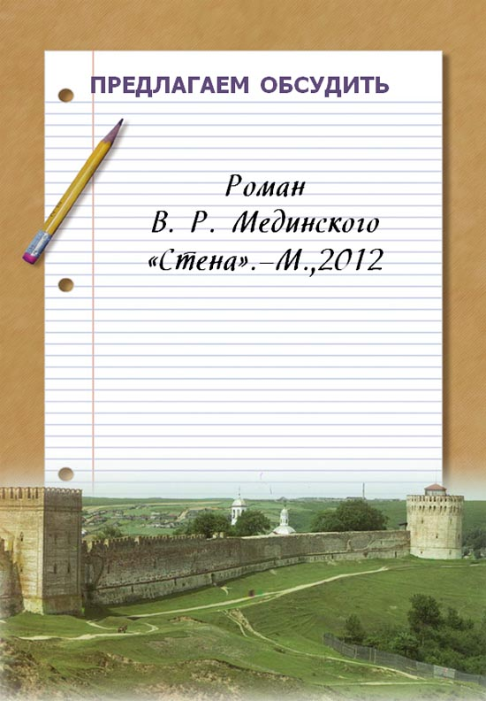

|
С начала года рейтинг продаж книжных магазинов возглавляет
исторический роман доктора политических наук, профессора МГИМО
МИД РФ, депутата Государственной Думы России, а ныне – министра
культуры РФ Владимира Мединского «Стена».
Автор хорошо знаком читателям по яркой трилогии «Мифы о
России» («Особенности национального пиара: РRавдивая история Руси
от Рюрика до Петра» и «О русском пьянстве, лени и жестокости» есть у
нас в библиотеке) и бестселлеру «Война. Мифы СССР 1939-1945».
Чем объясняется успех его произведений: талантом автора — или
административным ресурсом «партии власти»? Почему так полярны
оценки и велики ряды читателей Мединского? Обсудим!...
|
|
В начале 2012 года вышла в свет книга В. Р. Мединского «Стена» и её автор уже побывал
с презентацией в Смоленске. Сразу скажу: таких книг у нас ещё не было! Фактическая канва
романа – это так называемая «Смоленская оборона» — длившаяся почти два года оборона
русскими под предводительством воеводы М. Б. Шеина Смоленска от войск Речи Посполитой
в 1609—1611 гг. во время русско-польской войны 1605—1618 годов.
Роман вызывает ассоциации со многими известными произведениями, но ни в каком
из них приключения, романтика, мистика, интрига так не сочетались с максимальной
исторической достоверностью… В книге много познавательных моментов; если пояснения
не укладываются в рамки повествования, автор дает дополнительную информацию в
сносках. Так что книга играет большую просветительскую роль, ведь далеко не каждый
станет читать научную монографию. Мне кажется, Владимиру Ростиславовичу было самому
очень интересно работать над произведением. А учитывая, что 2012 год объявлен Годом
российской истории, книга пришлась как нельзя кстати.
Главный герой её – Смоленск, уже поэтому мне хотелось её почитать.
«Так получилось, что этот роман посвящен Смоленску. Конечно же, в целом он посвящен
не только вашему городу, но и всей России!» - сказал историк В. Р. Мединский. Автор
правильно заметил на презентации: «Непонятно, почему в массовых школьных учебниках
не упомянут эпизод обороны Смоленска 1609 – 1611гг. Смоленск в 1812 г. – упомянут,
Смоленск в 1941 г. – всего в двух словах». СПАСИБО автору! Он вынес на широкую
аудиторию историю нашей многострадальной Смоленщины, подчеркнув её роль.
Ведь действительно: сколько говорится о блокаде Ленинграда, а факт двухлетней
осады нашего города для многих новость. Москва сдалась, а Смоленск стоял! Вопреки
всем и всему! «Азов славен, Смоленск грозен!» - эта народная поговорка,
к сожалению, позабытая, взята эпиграфом к 1-ой главе.
Не было на Руси государя, а смоляне стояли за правое дело. Не зря в романе
есть сцена, когда защитники крепости спросили воеводу: «Как в бою друг другу
кричать-то?». Также очень трогательны и символичны слова архиепископа Сергия
перед смоленским людом.
«Патриотизм!» - так одним словом я бы выразила суть романа. Автора
упрекают в излишнем патриотизме. Но разве много патриотизма может быть!?
Он или есть, или его нет! Не стоит становиться «Иванами, не помнящими родства»!
А чтобы всё происходящее в романе выглядело более достоверно, автор
ввел вымышленное действующее лицо – посадского голову Никиту Зотова.
Он мыслит совсем по-иному, не как воевода Шеин. Но по-своему радеет за
сохранение города, имущества, жизней людей (жаль, конечно, что пошел на
откровенное предательство).
Помню, в свое время, читая произведения Ф. М. Достоевского, я иногда
ощущала себя там, рядом с героями, на улицах Петербурга. Такое же чувство
возникало и при прочтении «Стены». Читаешь роман и много узнаешь о культуре
и быте, проникаешься духом того времени. Лично мне приятнее видеть на
страницах книг названия старинных одежд и предметов, чем перечисления
лейблов и марок машин в произведениях ныне модных авторов. Для любителей
истории оружия в романе также есть информация. Интересно устройство
крепостной стены? Пожалуйста!
Язык повествования – живой, красивый и … слишком современный.
Но, по-моему, это даже помогает легче проникнуть в ход событий.
Автор очень удачно применяет пословицы и поговорки. Честное слово,
в некоторых случаях даже вслух смеялась при прочтении.
Юмор – это ещё один плюс романа.
Произведение несет в себе и воспитательную функцию. Автор на
примере героев показал нам чистую любовь и преданность, дружбу и
честь, воинскую доблесть и отвагу.
На страницах романа автор как бы невзначай проводит параллели
с грядущими событиями на Земле смоленской, с современностью:
– Перед древними смолянами стоял выбор: с кем или под кем
остаться, и, следовательно, как вести торговые дела, – а
современники спорят о вступлении в ВТО.
– Это русская ментальность? Что-то другое? Но коррупция,
казнокрадство, приписки были и тогда.
– Правую руку воеводы Шеина, «главного разведчика» автор
назвал Лаврентием и наделил его узнаваемыми чертами.
– Героям романа являлись люди из будущего, виделись грядущие события.
– Автор мимоходом указывает на роль Смоленска в Великой
Отечественной войне, на тяжелейшую участь горожан и в этой войне.
Невольно рождаются ассоциации: на страницах романа упавший с
Успенского собора крест пронзает предателя; в 1943 году фашисты
вынесли из стен собора огромное количество реликвий, одним из
последних покидал стены храма офицер, у которого неожиданно
пошла носом кровь, залив фашистские знаки различия. Кара…
Да простит меня автор, но кое-что для меня осталось загадкой.
На каком берегу Днепра находился посад? А село Сущево находилось
вверх по течению Днепра?
Книга писалась три года. Возможно, поэтому есть некоторые
повторения. Но для непытливого читателя это даже плюс. Ведь
«повторение – мать учения»! В общем, получилось популярное историческое
произведение.
Приятно, что Владимир Ростиславович (имя-то какое!), написавший
книгу о Смоленске, ныне министр культуры. Хочется надеяться, что «Стена»
станет не единственным фактом его внимания к нашему городу.
|
Сотрудник службы обеспечения
книжных фондов кафедральных библиотек
библиотекарь I категории
Самусёва Татьяна Эдуардовна
|